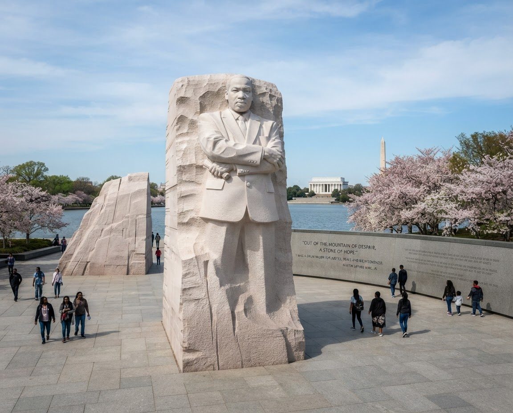
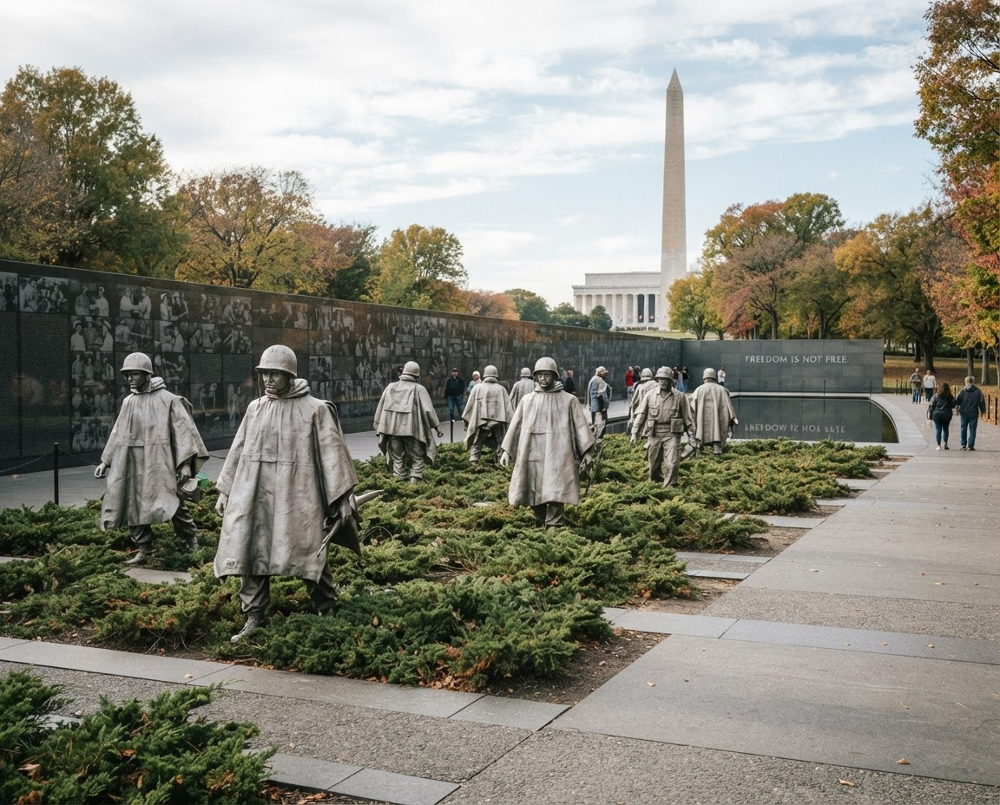
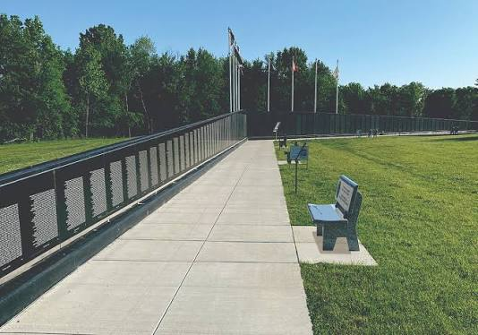
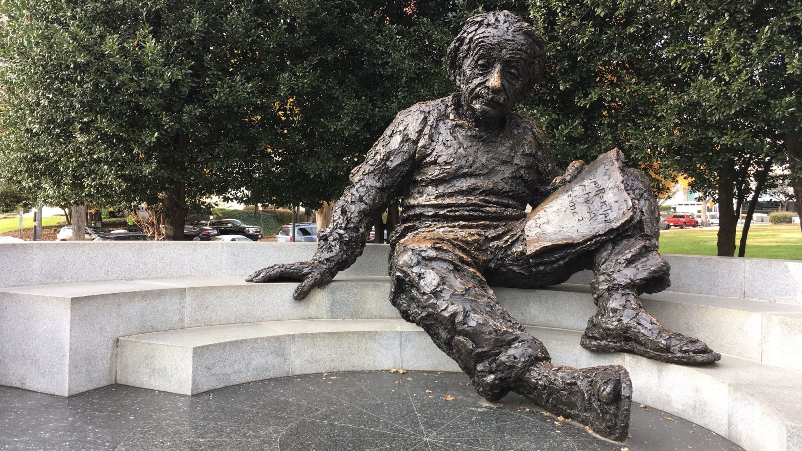
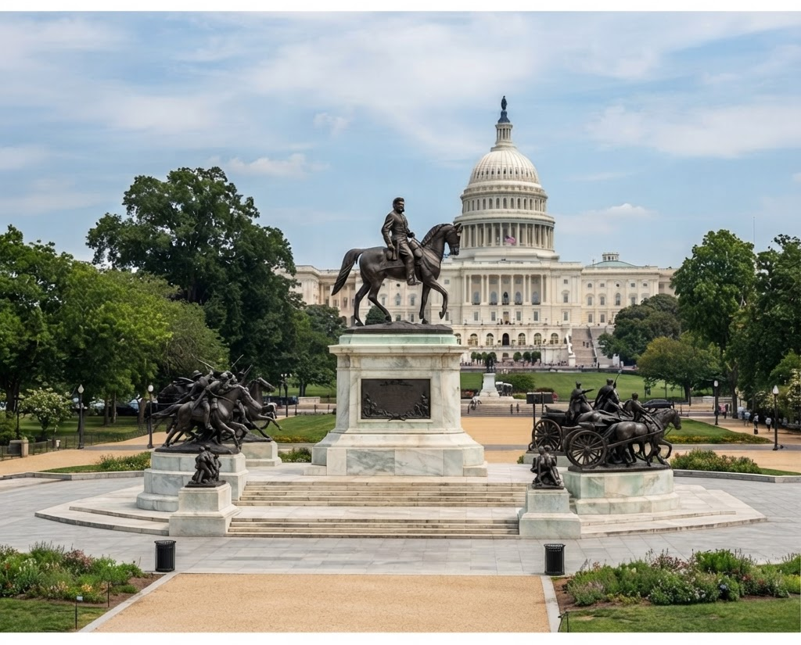
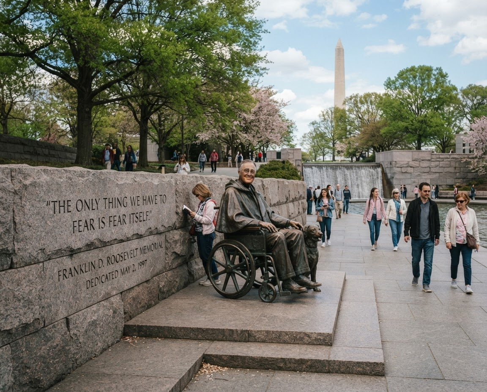
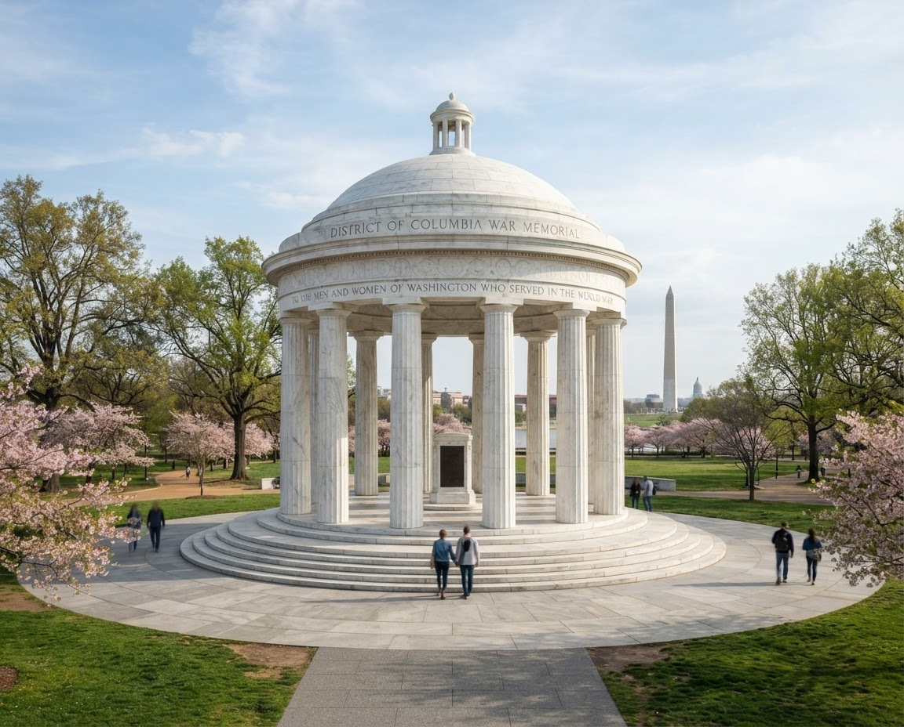
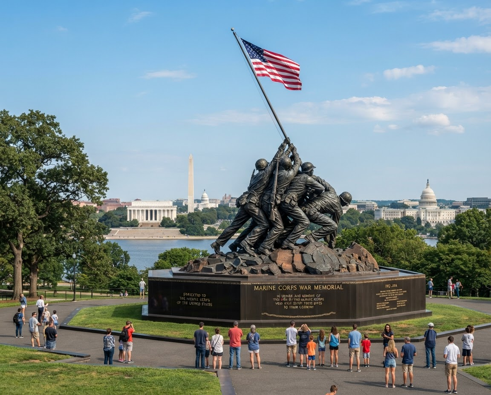
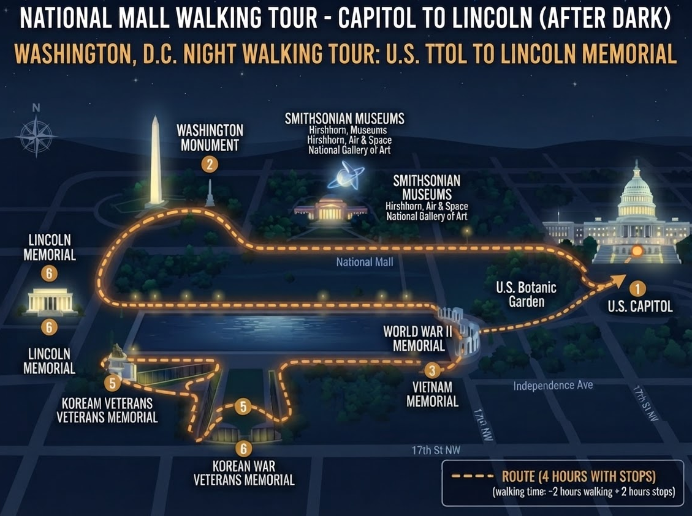

Monuments & Memorials
Photos, hours, nearest Metro, and ticket links for every stop on the Mall — plus when it's best to go.
Start Here: the four you can't skip
Open the full map →The Rest of The District

IMPORTANT FIGURES
Martin Luther King, Jr. Memorial
On the Tidal Basin loop between Lincoln and Jefferson.

WAR MEMORIAL
Korean War Veterans Memorial
Best in rain or fog — the statues were built for it.

WAR MEMORIAL
Vietnam Veterans Memorial
Rangers will help you find a name — ask at the kiosk.

IMPORTANT FIGURES
Albert Einstein Memorial
You're allowed to climb into his lap — the one statue in D.C. you can touch.

MILITARY
Ulysses S. Grant Memorial
Where the loop starts. Largest equestrian statue in the country.

PRESIDENT
Franklin D. Roosevelt Memorial
Four outdoor rooms; allow more time than you think.

WAR MEMORIAL
District of Columbia War Memorial
Tucked in the trees off the main path; almost always empty.

WAR MEMORIAL
Marine Corps War Memorial
Off the loop in Arlington — pair it with the cemetery, not the Mall.
WALK IT IN ONE AFTERNOON
The 3.5 mile loop, in the right order
Start at the Capitol steps, finish at Lincoln after dark. Every memorial above, no backtracking, about four hours with stops.
